Rows: 7,107
Columns: 20
$ forested <fct> Yes, Yes, No, Yes, Yes, Yes, Yes, Yes, Yes, Yes, Yes,…
$ year <dbl> 2005, 2005, 2005, 2005, 2005, 2005, 2005, 2005, 2005,…
$ elevation <dbl> 881, 113, 164, 299, 806, 736, 636, 224, 52, 2240, 104…
$ eastness <dbl> 90, -25, -84, 93, 47, -27, -48, -65, -62, -67, 96, -4…
$ northness <dbl> 43, 96, 53, 34, -88, -96, 87, -75, 78, -74, -26, 86, …
$ roughness <dbl> 63, 30, 13, 6, 35, 53, 3, 9, 42, 99, 51, 190, 95, 212…
$ tree_no_tree <fct> Tree, Tree, Tree, No tree, Tree, Tree, No tree, Tree,…
$ dew_temp <dbl> 0.04, 6.40, 6.06, 4.43, 1.06, 1.35, 1.42, 6.39, 6.50,…
$ precip_annual <dbl> 466, 1710, 1297, 2545, 609, 539, 702, 1195, 1312, 103…
$ temp_annual_mean <dbl> 6.42, 10.64, 10.07, 9.86, 7.72, 7.89, 7.61, 10.45, 10…
$ temp_annual_min <dbl> -8.32, 1.40, 0.19, -1.20, -5.98, -6.00, -5.76, 1.11, …
$ temp_annual_max <dbl> 12.91, 15.84, 14.42, 15.78, 13.84, 14.66, 14.23, 15.3…
$ temp_january_min <dbl> -0.08, 5.44, 5.72, 3.95, 1.60, 1.12, 0.99, 5.54, 6.20…
$ vapor_min <dbl> 78, 34, 49, 67, 114, 67, 67, 31, 60, 79, 172, 162, 70…
$ vapor_max <dbl> 1194, 938, 754, 1164, 1254, 1331, 1275, 944, 892, 549…
$ canopy_cover <dbl> 50, 79, 47, 42, 59, 36, 14, 27, 82, 12, 74, 66, 83, 6…
$ lon <dbl> -118.6865, -123.0825, -122.3468, -121.9144, -117.8841…
$ lat <dbl> 48.69537, 47.07991, 48.77132, 45.80776, 48.07396, 48.…
$ land_type <fct> Tree, Tree, Tree, Tree, Tree, Tree, Non-tree vegetati…
$ county <fct> Ferry, Thurston, Whatcom, Skamania, Stevens, Stevens,…Logistic regression 3
Lecture 21
While you wait: Participate 📱💻
Consider a fitted logistic regression:
\[ \log\left(\frac{\hat{p}}{1-\hat{p}}\right)=b_0+b_1x. \]
Which of the following is a correct description of how the predictions of a logistic regression model change when the predictor changes from \(x\) to \(x+1\)?
- \(\hat{p}^{(new)} = \hat{p}^{(old)}\times e^{b_1}\)
- \(\hat{y}^{(new)} = \hat{y}^{(old)} + b_1\)
- \(\widehat{log~odds}^{(new)} = \widehat{log~odds}^{(old)}\times e^{b_1}\)
- \(\widehat{odds}^{(new)} = \widehat{odds}^{(old)}\times e^{b_1}\)
- \(\hat{y}^{(new)} = \hat{y}^{(old)} \times b_1\)
Scan the QR code or go HERE. Log in with your Duke NetID.
JZ plans your weekend for you
Wednesday: SSMU Talk
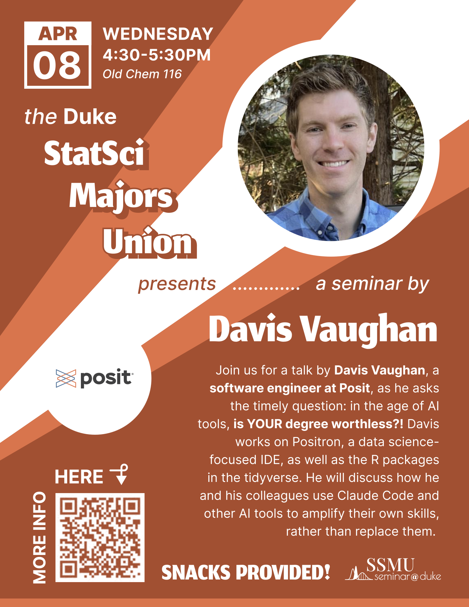
- The old broads in the stats mafia host an even older broad from the tidy mafia to scare you about your future
- Wednesday April 8 @ 4:30 pm
- Old Chem 116
Wednesday: Duke Symphony Concert
- Duke Symphony Orchestra
- Wednesday April 8 @ 7:30 pm
- Baldwin Auditorium (East Campus)
- WANANA classmates and TAs!
Friday: Duke Chinese Dance
- Insta: @dukechinesedance
- Friday April 10 @ 7pm
- Page Auditorium
- Classmates! TAs! Josh!
Friday: Momentum Showcase
- Insta: @momentum_duke
- Friday April 10 @ 7pm
- Reynolds Theatre
- Lily! Katarina!
Saturday: DBBH’s Spring Business Conference
- Duke Business Behind Health (DBBH)
- Saturday April 11
- In the business school
- Great if you’re pre-med, pre-biotech, etc
- Rub elbows with the muckety-mucks!
Saturday: Devils en Pointe and Embodiment
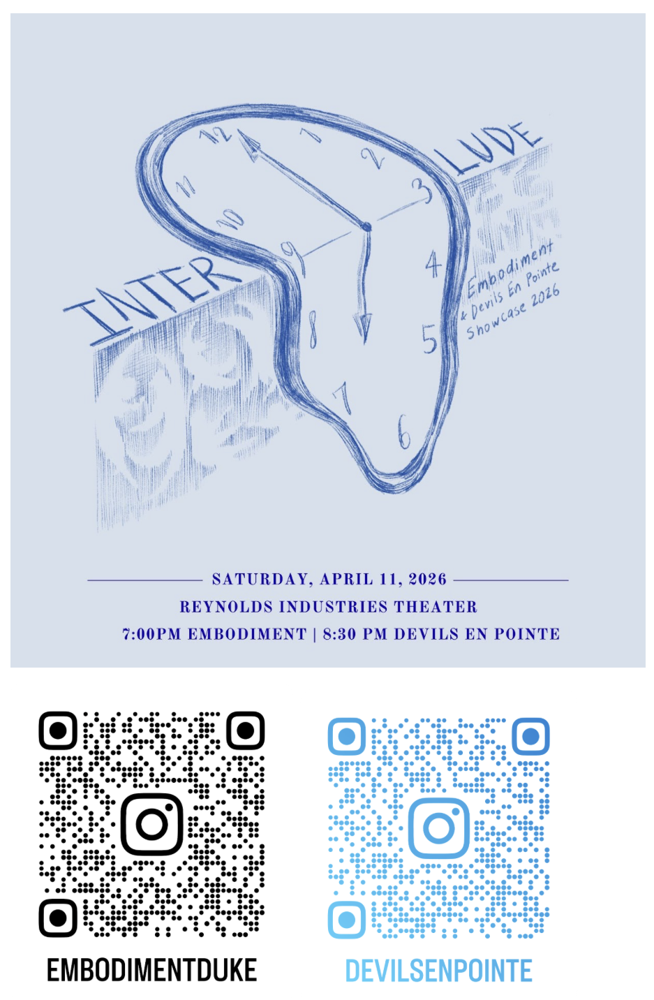
- Devils en Pointe
- Embodiment
- Saturday April 11 @ 7pm
- Reynolds Industries Theater
- Classmates! More Shelly Han!
Saturday: Nakisai Showcase
- Insta: @dukenakisaiade
- Saturday April 11 @ 7pm
- Page Auditorium
- #DOMOREBELIT
Saturday: Pureun Showcase
- Insta: @duke_pureun
- Saturday April 11 @ 8:15pm
- Page Auditorium
- Makky! Mia!
Sunday: Ishq Showcase
- Insta: @duke.ishq
- Sunday April 12 @ 3pm
- Reynolds Theater
- Maaany WANANA alumni
Sunday: Chinese Music Ensemble
- Duke Chinese Music Ensemble
- Sunday April 12 @ 5pm
- Nelson Music Room (East Campus)
- Eric!
Midterm 2
Midterm Exam 2
Worth 20% of your final grade; consists of two parts:
-
In-class: worth 80% of the Midterm 2 grade;
- All multiple choice;
- Wednesday April 8 11:45 AM - 1:00 PM in this room;
-
Take-home: worth 20% of the Midterm 2 grade.
- Like a mini HW;
- Completely open resource, but citation policies apply, and collaboration of any kind is forbidden;
- Released Thursday April 9 at 6:00 pm;
- Due Sunday April 12 @ 11:59 pm.
If you take every exam and do better on the final than you did on this, we replace it.
FYIs
- Very similar in length, style, and format to Midterm 1;
- The emphasis is placed heavily on the modeling material introduced after spring break, but you don’t get to forget the coding tools from before (we’ll see example today);
- (That said, studying pivots and joins is not the best use of your time);
- OH are canceled while the take-home is live. Seek help by posting privately on Ed;
Study advice
- Study guide
- Work on your cheat sheet;
- Correct old labs and homeworks;
- Old AEs: complete tasks we didn’t get to and compare with key;
- Code along: watch these videos specifically;
- Odd-numbered exercises in the back of IMS Chs. 7 - 9.
Cheat sheet advice
- Pictures pictures pictures;
- Instead of just lists of function names with verbal descriptions, give yourself detailed examples where you can see the input, see the code, see the output, and you annotate precisely how and why the code did what it did.
Misconduct reminder
- Inappropriate collaboration will result in a zero on the entire take-home and be referred to the conduct office;
- That zero will not be dropped or replaced;
- If a conduct violation of any kind is discovered, your final letter grade in the course will be permanently reduced (A- down to B+, B+ down to B, etc);
- If folks share solutions, all students involved will be penalized equally, the sharer the same as the recipient.
Misconduct reminder
You initial this on the take-home document:
I hereby state that I have not communicated with or gained information in any way from my classmates or any other humans other than JZ during this exam, that all work is my own, and that I have properly cited any non-course resources I have used.
Searching for ambiguity in this statement after the fact is not a winning strategy.
Logistic wrap-up
forested data
7107 rows and 20 columns;
Each observation (row) is a plot of land;
Variables include geographical and meteorological information about each plot, as well as a binary indicator
forested(“Yes” or “No”);Given information about a plot that is easy (and cheap) to collect remotely, can we use a model to predict if a plot is forested without actually visiting it (which could be difficult and costly)?
forested data
Read the documentation:
?forestedGoal
Use the data we’ve already seen to predict if a yet-to-be-observed plot of land is forested;
We want a model that does well on data it has never seen before;
“Out-of-sample” predictions on new data are more useful than “in-sample” predictions on old data;
Training versus testing data
To mimic this “out-of-sample” idea, we randomly split the data into two parts:
- training data: this is what the model gets to see when we fit it;
- test data: withheld. We assess how well the trained model can predict on this data it hasn’t seen before.
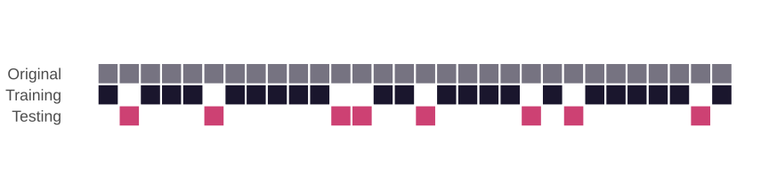
Randomly split data into training and test sets
By default it’s a 75%/25% training/test split.
set.seed(8675309)
forested_split <- initial_split(forested)
forested_train <- training(forested_split)
forested_test <- testing(forested_split)The split is random, but we want the results to be reproducible, so we “freeze the random numbers in time” by setting a seed. If we don’t tell you exactly what seed to use on an assignment, you can pick any positive integer you want.
Explore: forested or not
ggplot(forested_train, aes(x = lon, y = lat, color = forested)) +
geom_point(alpha = 0.7) +
scale_color_manual(values = c("Yes" = "forestgreen", "No" = "gold2")) +
theme_minimal()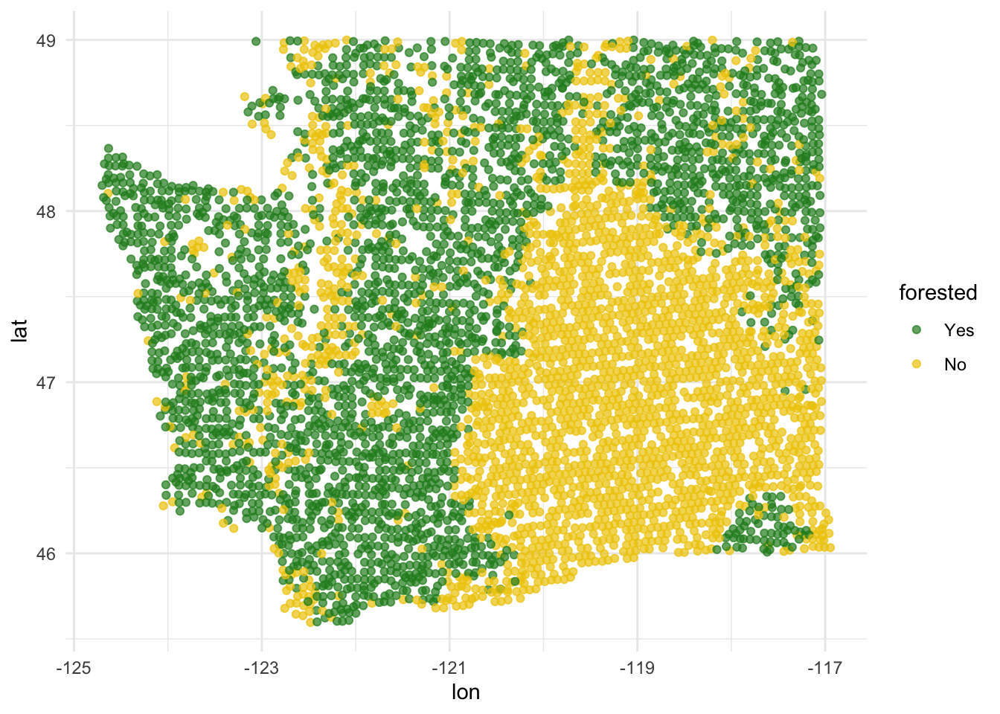
Explore: annual precipitation
ggplot(forested_train, aes(x = lon, y = lat, color = precip_annual)) +
geom_point(alpha = 0.7) +
labs(color = "annual\nprecipitation\n(mm × 100)") +
theme_minimal()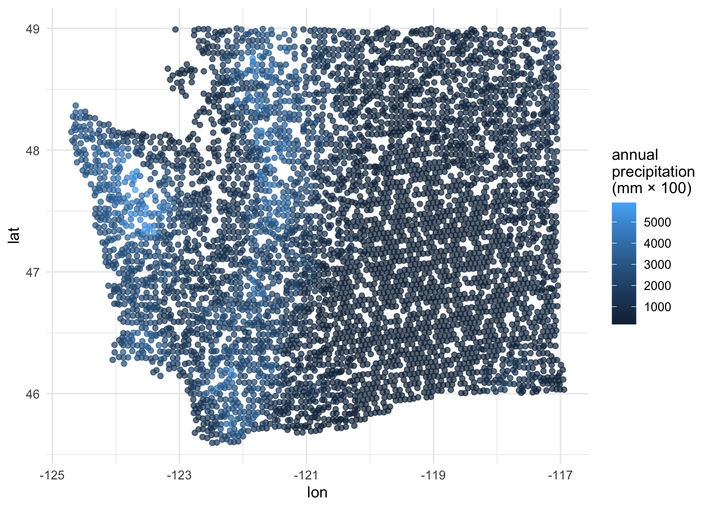
FYI: the response variable must be a factor
forested already comes as a factor, so we’re lucky:
. . .
But if it didn’t, things would not work:
logistic_reg() |>
fit(as.numeric(forested) ~ precip_annual, data = forested_train)Error in `check_outcome()`:
! For a classification model, the outcome should be a <factor>, not a
double vector.FYI: the base level is treated as “failure” (0)
The base level here is “Yes”, so “No” is treated as “success” (1):
levels(forested$forested)[1] "Yes" "No" . . .
As a result, this code:
logistic_reg() |>
fit(forested ~ precip_annual, data = forested_train). . .
Corresponds to this model:
\[ \widehat{\text{Prob}( \texttt{forested = "No"} \mid x)} = \frac{e^{b_0+b_1 x}}{1 + e^{b_0+b_1 x}}. \]
. . .
This is not a problem, but it means that in order to interpret the output correctly, you need to understand how your factors are leveled.
Fitting a logistic regression model
Similar syntax to linear regression:
forested_precip_fit <- logistic_reg() |>
fit(forested ~ precip_annual, data = forested_train)
tidy(forested_precip_fit)# A tibble: 2 × 5
term estimate std.error statistic p.value
<chr> <dbl> <dbl> <dbl> <dbl>
1 (Intercept) 1.57 0.0557 28.2 6.89e-175
2 precip_annual -0.00190 0.0000602 -31.6 5.98e-219. . .
\[ \log\left(\frac{\hat{p}}{1-\hat{p}}\right) = 1.57 - 0.0019 \times precip. \]
Three equivalent representations
| Version | equation | Friendly LHS? | Friendly RHS? |
|---|---|---|---|
| Probability: (0, 1) | \[\hat{p}=\frac{e^{b_0+b_1x}}{1+e^{b_0+b_1x}}\] | ✅ | ❌ |
| Odds: \((0,\,\infty)\) | \[\frac{\hat{p}}{1-\hat{p}}=e^{b_0+b_1x}\] | 🥴 | 🥴 |
| Log-odds: \((-\infty,\,\infty)\) | \[\log\left(\frac{\hat{p}}{1-\hat{p}}\right)=b_0+b_1x\] | ❌ | ✅ |
Take your pick depending on what you’re trying to do.
Probability to log-odds
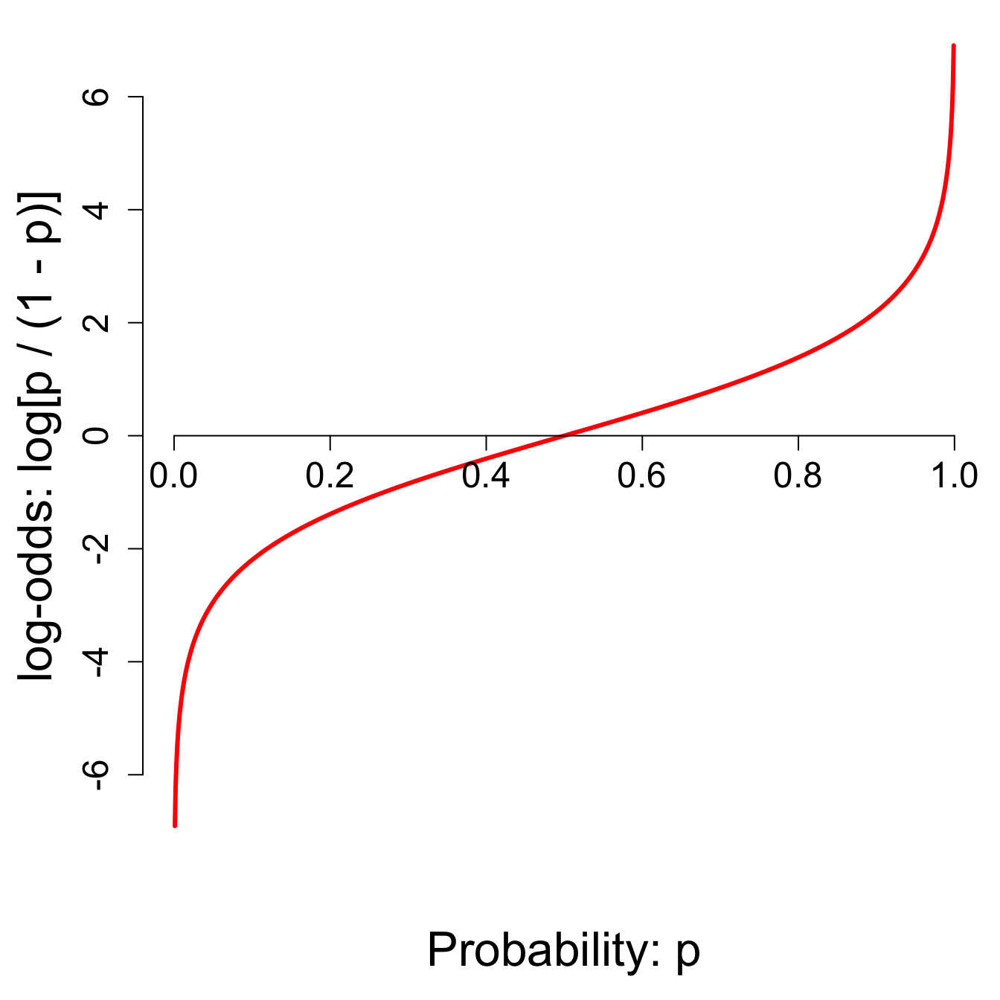
- \(p = 0 \to \text{log-odds}=-\infty\);
- \(p = 1/2 \to \text{log-odds}=0\);
- \(p = 1 \to \text{log-odds}=\infty\);
- And everything in between.
The log-odds transformation takes probabilities between 0 and 1 and streeetches them out to numbers between \(-\infty\) and \(\infty\), for which the linear model is appropriate.
Interpreting the intercept
If precip = 0, then…
\[ \widehat{\text{Prob}( \texttt{forested = "No"} \mid precip = 0)} = \frac{e^{1.57}}{1 + e^{1.57}}\approx 0.83 \]
So when \(precip = 0\), the model predicts that the probability of forested = "No" is about 83%.
Note
We didn’t interpret the intercept \(b_0=1.57\) directly. We transformed it into an interpretable quantity using the probability version of the logsitic regression model.
Interpreting the slope
Odds at \(precip\):
\[ \frac{\hat{p}}{1-\hat{p}} = {\color{blue}{e^{1.57 - 0.0019 \times precip}}} \]
. . .
Odds at \(precip + 1\):
\[ \begin{aligned} \frac{\hat{p}}{1-\hat{p}} &= e^{1.57 - 0.0019 \times (precip + 1)} \\ &= e^{1.57 - 0.0019 \times precip - 0.0019} \\ &= {\color{blue}{e^{1.57 - 0.0019 \times precip}}} \times \color{red}{e^{-0.0019}} \end{aligned} \]
. . .
If \(precip\) increases by one unit, the model predicts a decrease in the odds that forested = "No" by a multiplicative factor of \(e^{-0.0019}\approx 0.99\).
Generate predictions for the test data
Augment the test data frame with three new columns on the left that include model predictions (classifications and probabilities) for each row:
forested_precip_aug <- augment(forested_precip_fit, forested_test)
forested_precip_aug# A tibble: 1,777 × 23
.pred_class .pred_Yes .pred_No forested year elevation eastness northness
<fct> <dbl> <dbl> <fct> <dbl> <dbl> <dbl> <dbl>
1 Yes 0.711 0.289 No 2005 164 -84 53
2 Yes 0.968 0.0319 Yes 2003 1031 -49 86
3 Yes 0.992 0.00806 Yes 2005 1330 99 7
4 No 0.266 0.734 No 2014 507 44 -89
5 No 0.263 0.737 No 2014 542 -32 -94
6 No 0.267 0.733 No 2014 759 -2 -99
7 No 0.232 0.768 No 2014 119 0 0
8 No 0.241 0.759 No 2014 419 86 -49
9 No 0.336 0.664 Yes 2014 569 -97 -21
10 No 0.279 0.721 No 2014 340 -54 83
# ℹ 1,767 more rows
# ℹ 15 more variables: roughness <dbl>, tree_no_tree <fct>, dew_temp <dbl>,
# precip_annual <dbl>, temp_annual_mean <dbl>, temp_annual_min <dbl>,
# temp_annual_max <dbl>, temp_january_min <dbl>, vapor_min <dbl>,
# vapor_max <dbl>, canopy_cover <dbl>, lon <dbl>, lat <dbl>, land_type <fct>,
# county <fct>How did the model perform?
These are the four possibilities:

- Our test data have the truth in the
forestedcolumn; - We can compare the predictions in
.pred_classto the true values and see how we did.
Getting the error rates
Count how many predictions fell into the four bins:
forested_precip_aug |>
count(forested, .pred_class)# A tibble: 4 × 3
forested .pred_class n
<fct> <fct> <int>
1 Yes Yes 683
2 Yes No 290
3 No Yes 140
4 No No 664Still need all the tools from before spring break!
Getting the error rates
Compute the error rates:
forested_precip_aug |>
count(forested, .pred_class) |>
group_by(forested) |>
mutate(
p = n / sum(n)
)# A tibble: 4 × 4
# Groups: forested [2]
forested .pred_class n p
<fct> <fct> <int> <dbl>
1 Yes Yes 683 0.702
2 Yes No 290 0.298
3 No Yes 140 0.174
4 No No 664 0.826Still need all the tools from before spring break!
Getting the error rates
Label the rows so we don’t go crazy:
forested_precip_aug |>
count(forested, .pred_class) |>
group_by(forested) |>
mutate(
p = n / sum(n),
decision = case_when(
forested == "Yes" & .pred_class == "Yes" ~ "sensitivity",
forested == "Yes" & .pred_class == "No" ~ "false negative",
forested == "No" & .pred_class == "Yes" ~ "false positive",
forested == "No" & .pred_class == "No" ~ "specificity",
)
)# A tibble: 4 × 5
# Groups: forested [2]
forested .pred_class n p decision
<fct> <fct> <int> <dbl> <chr>
1 Yes Yes 683 0.702 sensitivity
2 Yes No 290 0.298 false negative
3 No Yes 140 0.174 false positive
4 No No 664 0.826 specificity FYI: error rates sum to 1 within the levels f the true outcome
- For these two, the denominator is the number of truly “zero” cases:
- TNR: proportion of “zero” cases correctly classified as “zero;”
- FPR: proportion of “zero” cases incorrectly classified as “one;”
- For these two, the denominator is the number of truly “one” cases:
- FNR: proportion of “one” cases incorrectly classified as “zero,”
- TPR: proportion of “one” cases correctly classified as “one.”
. . .
So TNR + FPR = 1 and FNR + TPR = 1.
That’s why we did group_by(forested).
FYI: the default threshold is 50%
The model produces probabilities:
.pred_Yesand.pred_No;The concrete classifications in the
.pred_classcolumn come from applying a 50% threshold to these probabilities:
\[ \widehat{\texttt{forested}}= \begin{cases} \texttt{"No"} & \texttt{.pred\_Yes} \leq 0.5\\ \texttt{"Yes"} & \texttt{.pred\_Yes} > 0.5. \end{cases} \]
- If you want to override that default, you must do so manually.
Change threshold to 0.00
New threshold > New classifications > New error rates
Change threshold to 0.25
New threshold > New classifications > New error rates
forested_precip_aug |>
mutate(
.pred_class = if_else(.pred_Yes <= 0.25, "No", "Yes")
) |>
count(forested, .pred_class) |>
group_by(forested) |>
mutate(
p = n / sum(n),
)# A tibble: 3 × 4
# Groups: forested [2]
forested .pred_class n p
<fct> <chr> <int> <dbl>
1 Yes Yes 973 1
2 No No 179 0.223
3 No Yes 625 0.777Change threshold to 0.50
New threshold > New classifications > New error rates
forested_precip_aug |>
mutate(
.pred_class = if_else(.pred_Yes <= 0.50, "No", "Yes")
) |>
count(forested, .pred_class) |>
group_by(forested) |>
mutate(
p = n / sum(n),
)# A tibble: 4 × 4
# Groups: forested [2]
forested .pred_class n p
<fct> <chr> <int> <dbl>
1 Yes No 290 0.298
2 Yes Yes 683 0.702
3 No No 664 0.826
4 No Yes 140 0.174Change threshold to 0.75
New threshold > New classifications > New error rates
forested_precip_aug |>
mutate(
.pred_class = if_else(.pred_Yes <= 0.75, "No", "Yes")
) |>
count(forested, .pred_class) |>
group_by(forested) |>
mutate(
p = n / sum(n),
)# A tibble: 4 × 4
# Groups: forested [2]
forested .pred_class n p
<fct> <chr> <int> <dbl>
1 Yes No 474 0.487
2 Yes Yes 499 0.513
3 No No 731 0.909
4 No Yes 73 0.0908Change threshold to 1.00
New threshold > New classifications > New error rates
Picture how errors change with threshold (th)
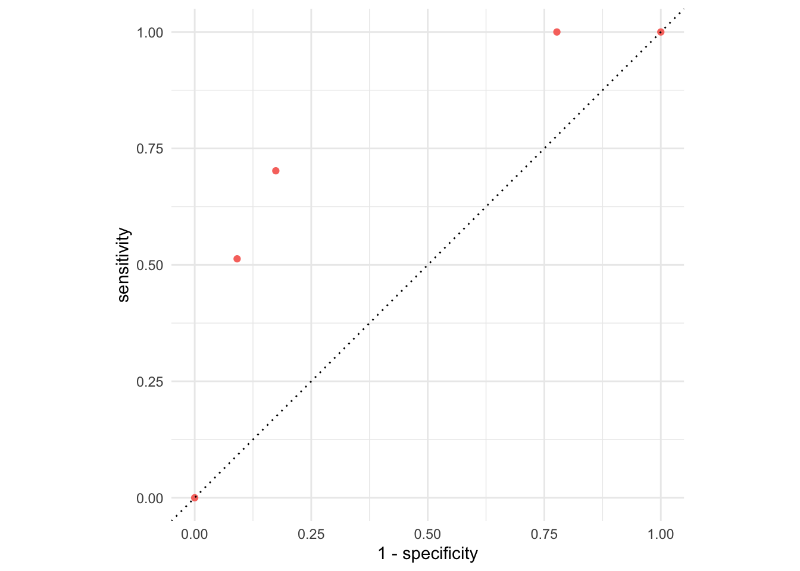
Picture how errors change with threshold (th)
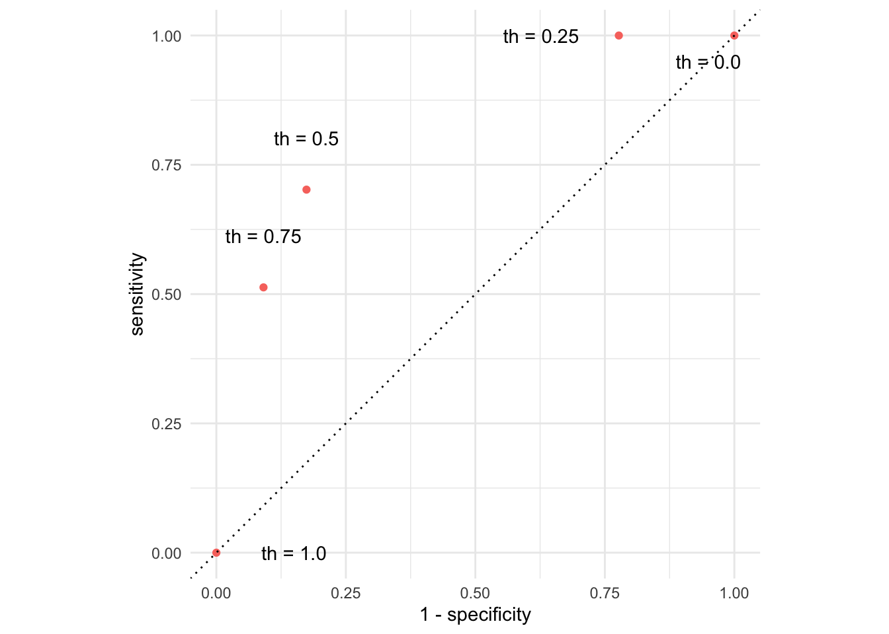
But that was tedious
Let’s do “all” of the thresholds and connect the dots:
forested_precip_roc <- roc_curve(forested_precip_aug,
truth = forested,
.pred_Yes,
event_level = "first")
forested_precip_roc# A tibble: 1,180 × 3
.threshold specificity sensitivity
<dbl> <dbl> <dbl>
1 -Inf 0 1
2 0.224 0 1
3 0.225 0.00124 1
4 0.228 0.00249 1
5 0.228 0.00498 1
6 0.229 0.00622 1
7 0.229 0.00746 1
8 0.230 0.00995 1
9 0.230 0.0124 1
10 0.231 0.0137 1
# ℹ 1,170 more rowsUnpacking roc_curve
Recall the augmented data frame:
forested_precip_aug |>
select(.pred_class:forested)# A tibble: 1,777 × 4
.pred_class .pred_Yes .pred_No forested
<fct> <dbl> <dbl> <fct>
1 Yes 0.711 0.289 No
2 Yes 0.968 0.0319 Yes
3 Yes 0.992 0.00806 Yes
4 No 0.266 0.734 No
5 No 0.263 0.737 No
6 No 0.267 0.733 No
7 No 0.232 0.768 No
8 No 0.241 0.759 No
9 No 0.336 0.664 Yes
10 No 0.279 0.721 No
# ℹ 1,767 more rowsRecall how forested is leveled:
levels(forested_precip_aug$forested)[1] "Yes" "No" roc_curve(forested_precip_aug,
truth = forested,
.pred_Yes,
event_level = "first")- Supply augmented data frame;
- Tell it which column contains true classifications;
- Tell it which column contains the predicted probabilities for the level you care about
- Tell it which level of
truthis the one you care about
Warning
Those last two arguments need to match!
The ROC curve
ggplot(forested_precip_roc, aes(x = 1 - specificity, y = sensitivity)) +
geom_path() +
geom_abline(lty = 3) +
coord_equal() +
theme_minimal()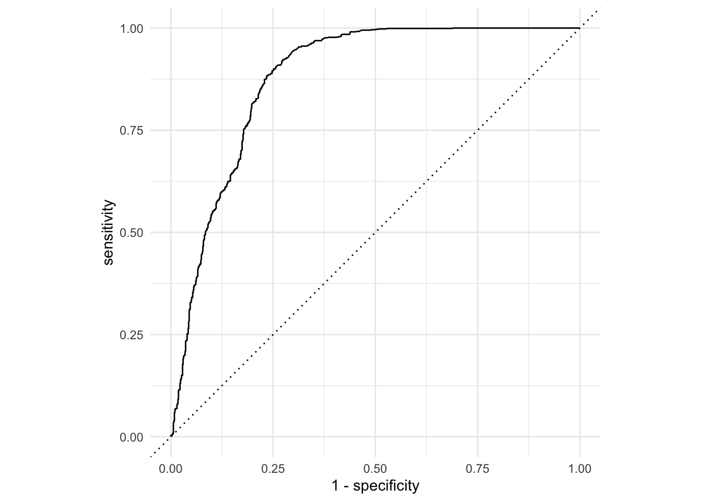
The ROC curve
ROC stands for receiver operating characteristic;
This visualizes the classification accuracy across a range of thresholds;
The more “up and to the left” it is, the better.
We can quantify “up and to the left” with the area under the curve (AUC).
The ROC curve

AUC = 1
This is the best we could possibly do:
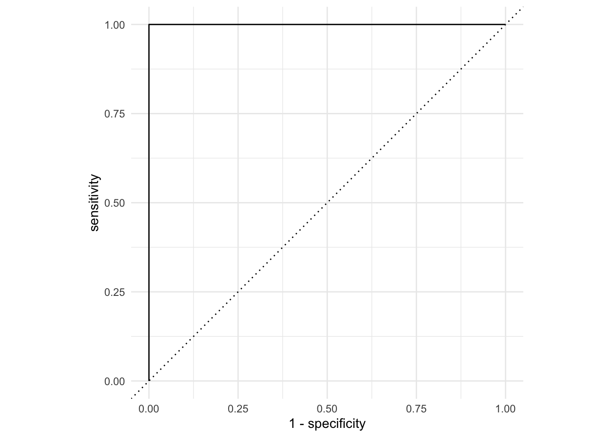
AUC = 1 / 2
Don’t waste time fitting a model. Just flip a coin:
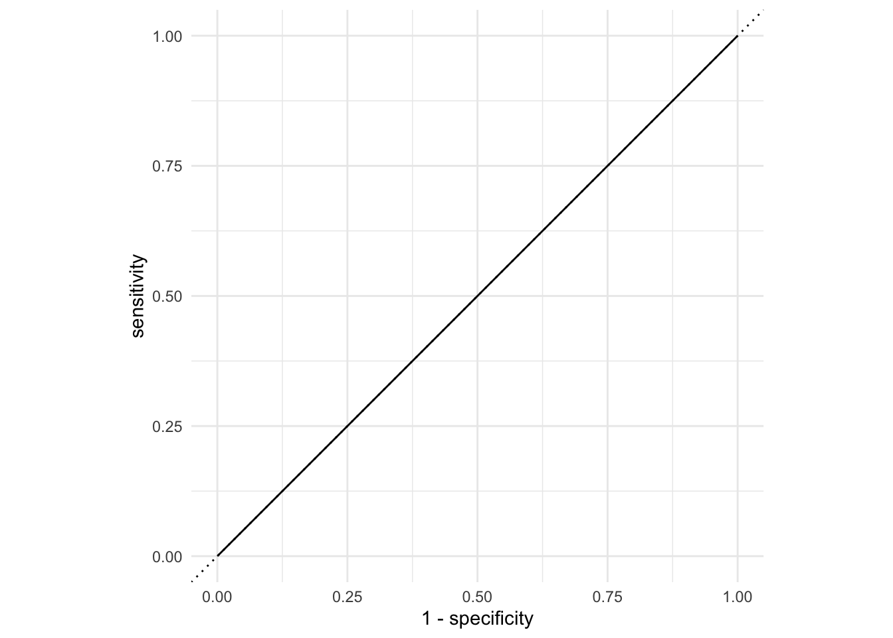
AUC = 0
This is the worst we could possibly do:
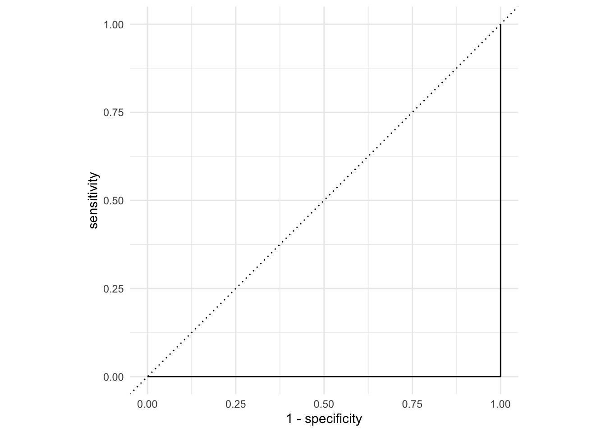
AUC for the model we fit
roc_auc(
forested_precip_aug,
truth = forested,
.pred_Yes,
event_level = "first"
)# A tibble: 1 × 3
.metric .estimator .estimate
<chr> <chr> <dbl>
1 roc_auc binary 0.879Not bad!
The area under the ROC curve
This is a “quality score” for a logistic regression model;
When you compute it for a test data set that you set aside, the AUC is a measure of out-of-sample prediction accuracy;
AUC is a number between 0 and 1, where 0 is awful and 1 is great, similar to \(R^2\) for linear regression.
The function
roc_auccomputes it for you, and it takes the same set of arguments asroc_curve.
New commands
logistic_regaugmentroc_curveroc_aucset.seed-
initial_split,training,test geom_path
Application exercise
Data
Taxi trips in Chicago, IL in 2022
Data from Chicago Data Portal
Data: chicago_taxi
chicago_taxi <- read_csv("data/chicago-taxi.csv")chicago_taxi# A tibble: 2,000 × 7
tip distance company local dow month hour
<chr> <dbl> <chr> <chr> <chr> <chr> <dbl>
1 no 0.4 other yes Fri Mar 17
2 no 0.96 Taxicab Insurance Agency Llc no Mon Apr 8
3 no 1.07 Sun Taxi no Fri Feb 15
4 no 1.13 other no Sat Feb 14
5 no 10.8 Sun Taxi no Sat Apr 14
6 no 3.6 Chicago Independents no Wed Mar 12
7 no 1.08 Flash Cab yes Wed Mar 13
8 no 0.85 Taxicab Insurance Agency Llc no Tue Mar 8
9 no 17.9 City Service no Tue Jan 20
10 no 0 City Service yes Sun Apr 16
# ℹ 1,990 more rowsData: chicago_taxi
glimpse(chicago_taxi)Rows: 2,000
Columns: 7
$ tip <chr> "no", "no", "no", "no", "no", "no", "no", "no", "no", "no", "…
$ distance <dbl> 0.40, 0.96, 1.07, 1.13, 10.81, 3.60, 1.08, 0.85, 17.92, 0.00,…
$ company <chr> "other", "Taxicab Insurance Agency Llc", "Sun Taxi", "other",…
$ local <chr> "yes", "no", "no", "no", "no", "no", "yes", "no", "no", "yes"…
$ dow <chr> "Fri", "Mon", "Fri", "Sat", "Sat", "Wed", "Wed", "Tue", "Tue"…
$ month <chr> "Mar", "Apr", "Feb", "Feb", "Apr", "Mar", "Mar", "Mar", "Jan"…
$ hour <dbl> 17, 8, 15, 14, 14, 12, 13, 8, 20, 16, 20, 8, 15, 15, 12, 0, 1…Data prep
chicago_taxi <- chicago_taxi |>
mutate(
tip = fct_relevel(tip, "no", "yes"),
local = fct_relevel(local, "no", "yes"),
dow = fct_relevel(dow, "Mon", "Tue", "Wed", "Thu", "Fri", "Sat", "Sun"),
month = fct_relevel(month, "Jan", "Feb", "Mar", "Apr")
)Outcome and predictors
- Outcome -
tip: Whether rider left a tip – a factor w/ levels “yes” and “no” - (Potential) predictors:
- Numerical:
-
distance: The trip distance, in odometer miles. -
hour: The hour of the day in which the trip began.
-
- Categorical:
-
company: The taxi company – companies that occurred few times were binned as “other”. -
local: Whether the trip started in the same community area as it began. -
dow: The day of the week in which the trip began. -
month: The month in which the trip began.
-
- Numerical:
Should we include a predictor?
To determine whether we should include a predictor in a model, we should start by asking:
Is it ethical to use this variable? (Or even legal?)
Will this variable be available at prediction time?
Does this variable contribute to explainability? How do we evaluate that?
The initial split
set.seed(20260406)
chicago_taxi_split <- initial_split(chicago_taxi)
chicago_taxi_split<Training/Testing/Total>
<1500/500/2000>Accessing the data
chicago_taxi_train <- training(chicago_taxi_split)
chicago_taxi_test <- testing(chicago_taxi_split)The training set
chicago_taxi_train# A tibble: 1,500 × 7
tip distance company local dow month hour
<fct> <dbl> <chr> <fct> <fct> <fct> <dbl>
1 no 1.75 Sun Taxi no Thu Mar 10
2 no 2.85 Flash Cab no Thu Mar 9
3 yes 0.7 Taxi Affiliation Services yes Tue Jan 15
4 yes 1.5 other no Sat Apr 13
5 no 8.99 Sun Taxi no Tue Feb 20
6 no 18.4 Sun Taxi no Sat Feb 14
7 yes 1.09 Chicago Independents no Wed Jan 16
8 yes 1.61 other yes Fri Feb 20
9 yes 4.77 Chicago Independents no Sat Apr 14
10 yes 0.54 City Service no Mon Jan 15
# ℹ 1,490 more rowsThe testing data
. . .
🙈
Initial questions
What’s the distribution of the outcome,
tip?What’s the distribution of numeric variables like
distanceorhour?How does the distribution of
tipdiffer across the categorical and numerical variables?
tip
What’s the distribution of the outcome, tip?
chicago_taxi_train |>
count(tip) |>
mutate(prop = n / sum(n))# A tibble: 2 × 3
tip n prop
<fct> <int> <dbl>
1 no 589 0.393
2 yes 911 0.607distance
What’s the distribution of distance?
ggplot(chicago_taxi_train, aes(x = distance)) +
geom_histogram(binwidth = 3)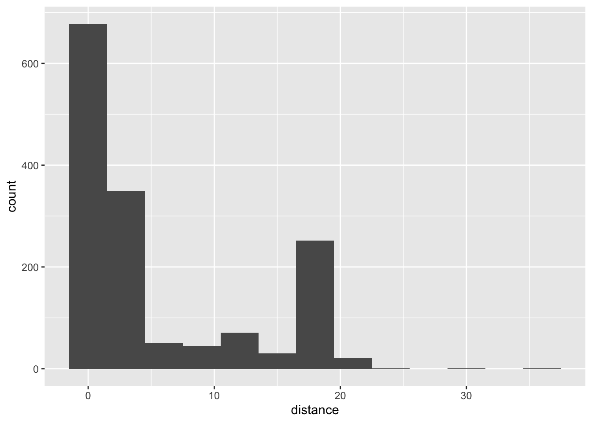
tip and distance
tip and hour
ggplot(chicago_taxi_train, aes(x = hour, fill = tip, group = tip)) +
geom_histogram(binwidth = 1, show.legend = FALSE) +
scale_fill_manual(values = c("yes" = "darkolivegreen4", "no" = "darkgray")) +
scale_x_continuous(breaks = seq(0, 18, by = 6)) +
facet_wrap(~tip, ncol = 1, labeller = label_both, scales = "free_y")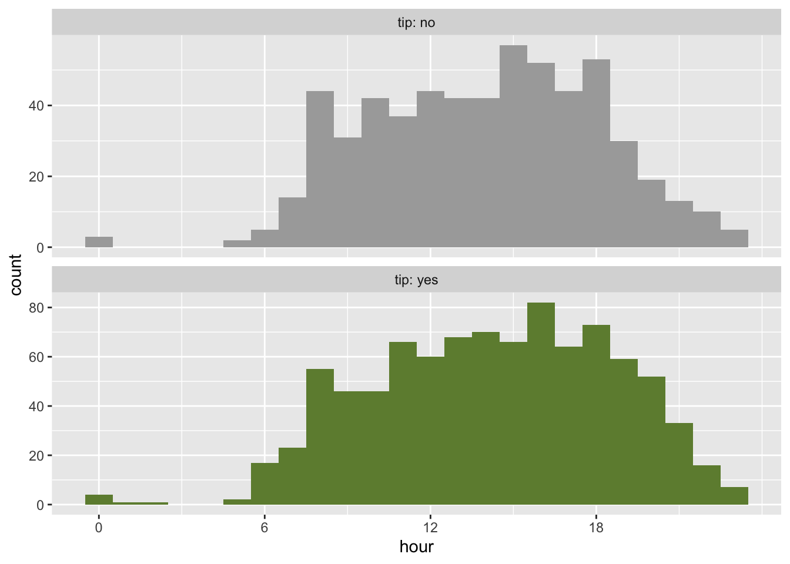
tip and local
tip and dow
ggplot(chicago_taxi_train, aes(x = dow, fill = tip)) +
geom_bar(position = "fill", color = "white") +
scale_fill_manual(values = c("yes" = "darkolivegreen4", "no" = "darkgray")) +
labs(y = "Proportion", x = "Day of week") +
theme(legend.position = "top")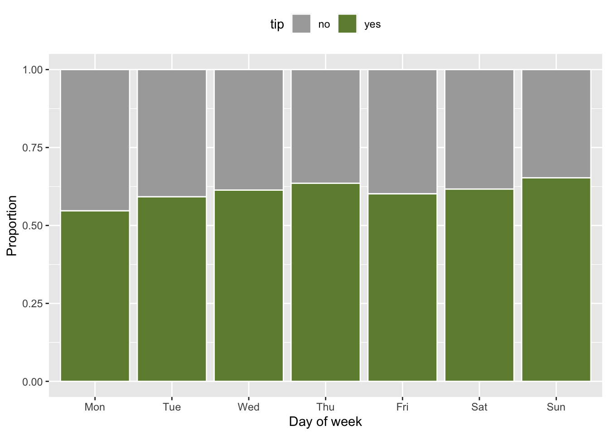